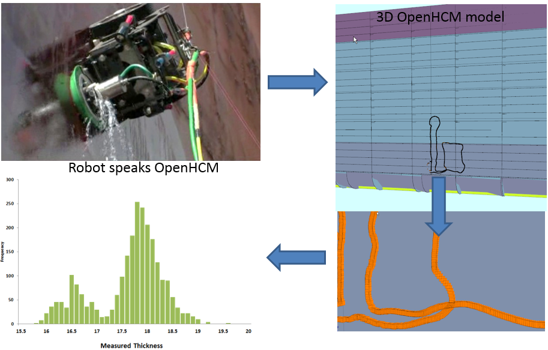
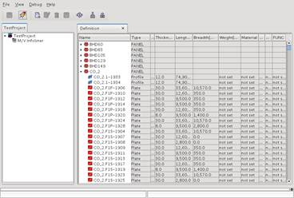
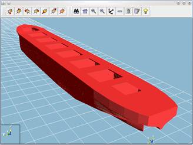
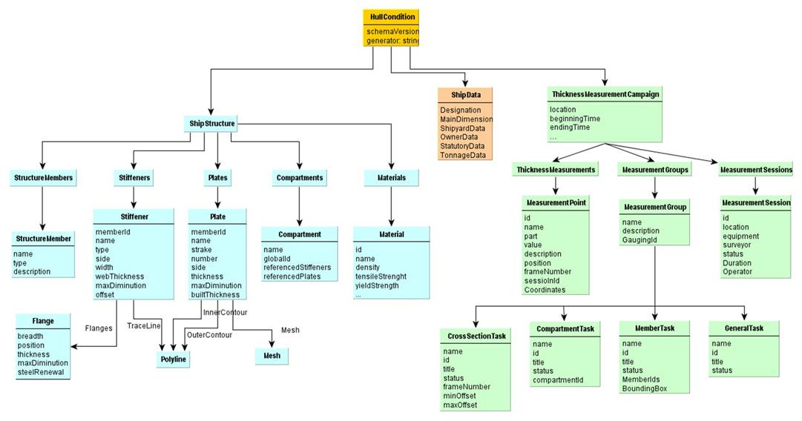

Open Hull Condition Model
An Open data exchange format for condition of ship’s hulls
Click this link to got to OpenHCM official GitHub web pages

|
• Enables capturing all information required for determining and analysing the structural status of a vessel. • It includes constructs for geometry information of plates and profiles as well as higher level structures. • Independently can transport data collection from ThicknessMeasurementCampaigns the measurements and their later associations to plates and profiles of a full structural model as needed e.g. for strength analysis. • OpenHCM also provides support for the use of "incomplete models" as well as for the incremental definition/population of the model data. • Structural modification/replacements due to repairs can be captured thereby support modifications during the life-cycle of a vessel
|
|
• Started as a result of CAS project (research project funded under EU Framework 6) • Version 0.71 formed the base for an initial public version in 2009 • OpenHCM consortium founded in 2010 • Version 1.3.1 was later introduced in 2011 • Version 2.0 (current) was accepted in Sep. 2013 |
|
• Originally modelled along the basic definitions of ISO 10.303-218 (Ship Structures) • Described as a XML schema, defining an XML file type. • Implemented in some HCM systems, e.g. from Classification Societies such as BV, DNVGL, … |
|
|
 |
 |

|
• Atlantec-es • Aveva • Bureau Veritas Marine & Offshore • TechnipFMC (Cybernetix) • DNVGL • Lloyds Register • MME • RS (Russian Maritime Register of Shipping) • Sener (Foran) |
A free 3D openHCM viewer is available online.
It is open source code, available here is available online.
For more information email to the OpenHCM consortium manager